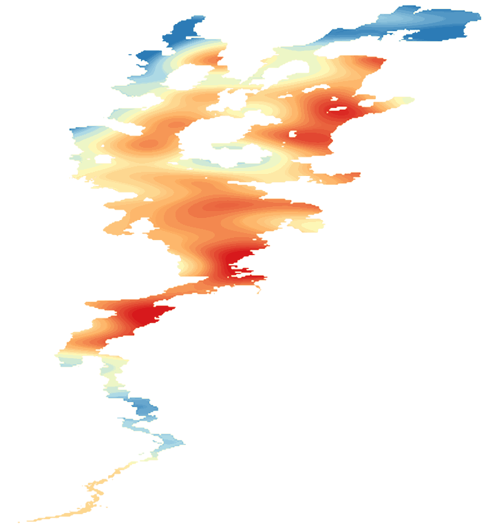

LakeScope › VT
Lake Champlain today
Updated 2026-11-26 - Atlas Labs
Some algae possible, 48°F water, level steady, 1 ft below normal, calm this morning.
Water level
93.16 ft
USGS gauge 04294413 - 2026-11-26
7-day trend: steady (-0.11 ft). Compared with normal for this date: -1.4 ft (same weeks, 2016-2025).
Water clarity and algae
Some algae possible Last clear view: yesterday.
Surface temperature
48°F
seen from space on 2026-11-22

Ice
Open - 0% ice cover
Estimate from weather and satellite, not a measurement. Check the ice yourself before going on it.
Weather, next 3 days
| Day | Sky | High / low | Wind | Rain |
|---|---|---|---|---|
| Thursday | Mostly Cloudy | 44 / 39°F | 7 mph NE | 0% |
| Friday | Light Rain Likely | 47 / 41°F | 6 mph E | 64% |
| Saturday | Chance Rain Showers | 47 / 40°F | 7 mph NW | 32% |
Sunrise 07:03 - sunset 16:16 - Full moon. National Weather Service.
Get the LakeScope app: alerts and the 3-D view of Lake Champlain